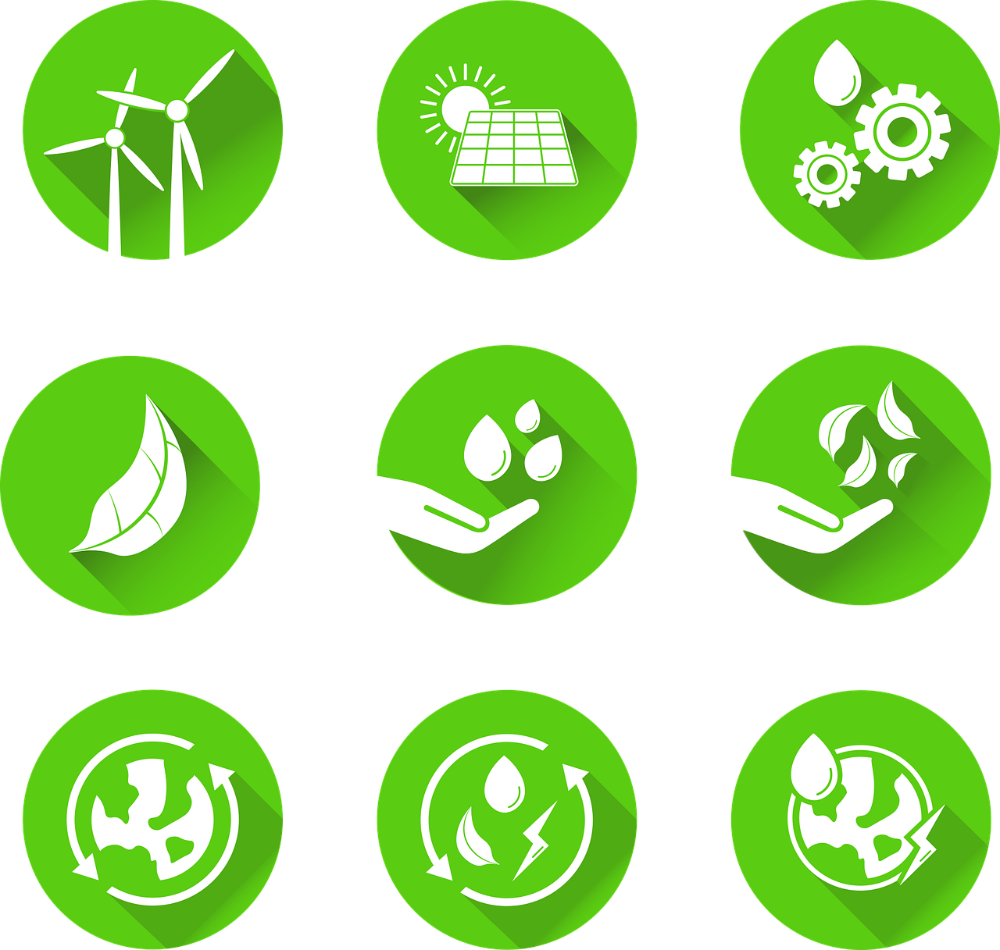
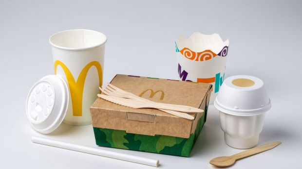
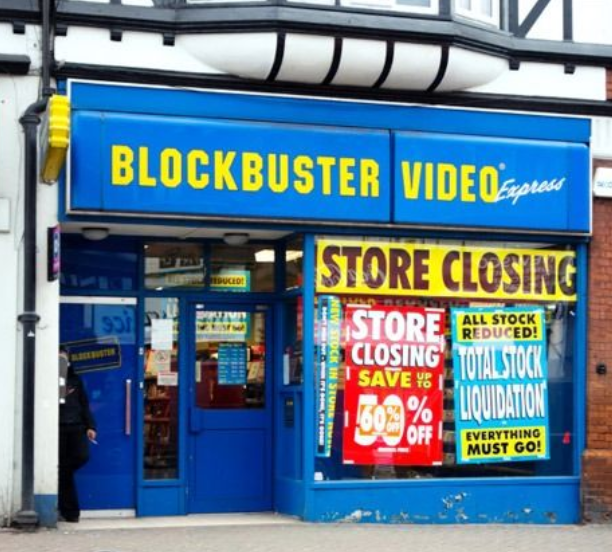
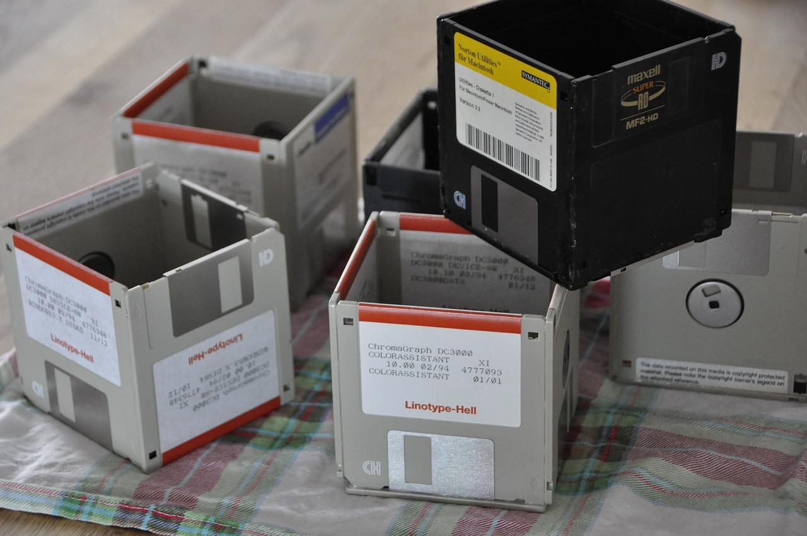

IB Docs (2) Team
IB Docs (2) Team

BMT 8 - Circular Business Models
 | “Never doubt that a small group of thoughtful, committed citizens can change the world; indeed, it is the only thing that ever has.” “You cannot protect the environment unless you empower people, you inform them, and you help them understand that these resources are their own, that they must protect them.” |
Traditional business models (also called linear business models) have focused on costs, revenues, and profits related to business activities, often with a short-term outlook. They empathise a linear approach of products that are created, consumed, and chucked away (disposed of) as waste. This has created a disposable society where the culture of consumerism is to use products only once and are then disgarded as rubbish. Examples include soft drinks cans, hotel amenities (such as disposable toothbrushes, shower caps, and razors), and fast food packaging. A disposable society leads to overconsumption and excessive generation of waste.

Fast food packaging has been part of a disposal society
By contrast, circular business models (CBM) focus on the long-term environmental consequences and sustainability matters related to business activities. Without CBMs, business activity based on traditional models is likely to have negative effects on the environment, such as resource depletion, climate change, and damage or destruction of ecosystems. CBMs are designed to turn all the waste that businesses and consumers produce into valuable and productive resources to be used again.
In essence, traditional business models focus on profitability whereas CBMs also focus on people and the planet. This means that using circular business models can be profitable and sustainable for businesses in the long term.
Watch this short video from The Ellen MacArthur Foundation that introduces the ideas behind a circular economy, on which numerous CBMs are built.
The Organization for Economic Cooperation and Development (OECD) defines circular business models as frameworks that:
This means that CBMs aim to replace the use of scarce resources, such as single-use plastics or non-renewable resources, with renewable, recyclable and/or bio-degradable resources for a sustainable corporate future. By doing so, organizations can reduce the harmful environmental side-effects resulting from business activity such as the extraction, use, and eventual disposal of non-renewable resources and other raw materials.
Antoine Frérot, the Chairman and CEO of French multinational company Veolia, which produces electricity from chicken droppings and wood scrap, said about the circular economy:
"We are witnessing the dawn of a new industrial revolution which introduces the circular economy. By being more sparing and efficient, the circular economy provides an antidote to overexploitation of the environment and to the more pessimistic forecasts, by prolonging the life cycle of raw materials, water and energy. It teaches us something not theoretical but is based on facts, and it draws inspiration from nature, in which everything is a resource."
CBMs are increasingly important due to changing production and consumption patterns, such as shorter life spans of consumer goods such as smartphones, tablet computers, motor vehicles, trainers (sneakers), and other items of clothing (fast fashion). Many of these consumer goods are simply replaced (and often thrown away) long before their useful product life cycle.
For businesses, traditional business models have led to instead use of natural and non-renewable resources in an inefficient way. The fast fashion industry (a term used to describe a highly profitable and exploitative business model based on replicating high-fashion designs by mass-producing these at low cost) has been heavily criticised for leading to huge amounts of waste and damage to the natural environment. As put succinctly by Lucy Siegle (b.1974), a British journalist and environmental activist said, "Fast fashion isn’t free. Someone else is paying.” (the generations of the future). Wedding dresses are another example - these are typically bespoke items that are produced for single-use, and contribute to the depletion of scarce resources. Overall, the fashion industry accounts for around 10% of global greenhouse gas emissions due to the long supply chains and energy-intensive production involved.
Another example is food waste. Hotel and restaurant buffets, for example, lead to huge amounts of food waste across the globe. Hence, the use of CBMs have grown in popularity as they involve firms using renewable energy sources and recycled, reused or upcycled materials for a more sustainable world.
Buffets at hotels and restaurants lead to significant amounts of food waste
By contrast, some businesses such as IKEA are encouraging consumers to waste less. Watch this short news report about how IKEA creates incentive for customers to recycle (and resell) their once-loved (unwanted) furniture.
Case Study 1 - CoffeeB
In terms of real-life applications, many businesses across all industries are taking CBMs more seriously. Take this example of CoffeeB, a brand of Swiss retail giant Migros, which strives to eliminate waste from consumers who use coffee capsules in the home and office. The "B" is CoffeeB stands for balls, as the innovative system uses coffee balls, that are easily and quickly compostable, rather than coffee capsules made by companies such as Keurig and Nespresso.
Read more about the CoffeeB system here.
The IB syllabus refers to the five circular business models featured in the The Organization for Economic Cooperation and Development's "Re-Circle Resource Efficiency and Circular Economy Project". The OECD's five circular business models are:
(i) Circular supply models
(ii) Resource recovery models
(iii) Product life extension models
(iv) Sharing models, and
(v) Product service system models
What all these models have in common is they use already existing materials and products as inputs in the production process and therefore their environmental footprint tends to be considerably smaller than that for traditional business models.
Top Tip 1!
The above 5 circular business models from the Organization for Economic Co-operation and Development (OECD) are the only ones that DP Business Management students need to learn. Although there are alternative models on CBMs in the world of academia (such as the Doughnut Economy or the Circularity Matrix), there is absolutely no need to teach these in this course.
Also, note that there is no commonly accepted definition of the curricular economy or CBM. In fact, according to "Conceptualizing the circular economy" by J. Kirchherr, D. Reike, and M. Hekkert (2017), there are about 114 definitions for "circular economy". Therefore, please stick to the definitions and models used by the OECD that feature in the IB DP Business Management Guide.
Sharing models are a category of circular business models that focus on allowing customers to share products that have a low ownership and/or usage rate, instead of consumers having to purchase and own such items for themselves that are often used just the once. Hence, sharing models enable products to be used more efficiently, providing a better use of an economy's scarce resources.
Changes in the external environment, including greater awareness of the impact of commercial activities on ecological sustainability mean that an increasing number of businesses are providing services where customers share products rather than owning them outright.
Examples of businesses that use sharing models include:

Airbnb - The world’s largest accommodation provider, but doesn't owns any of its own real estate or rental properties. This saves the economy from having to build new hotels and properties, alongside the environmental impacts of large-scale construction projects. According to the OECD, Airbnb rooms are typically around 15 to 20% cheaper than equivalent hotel rooms.
Uber - The world’s largest taxi company, but doesn't owns any physical vehicles or taxis. Other service providers of such sharing models include Lyft, Gett, DiDi Global, Grab, RelayRides, and BlaBlaCar.
Bicycle sharing service (public bike share), such as Mobike, Lime, JUMP Bikes, and Motivate rent bicycles to use in city centres rather than people buying their own bikes. Cities that have established bike sharing services include Shanghai, Taiyuan, Hangzhou, New York City, Montreal, Barcelona, Paris, and London.
Zipcar - Global car-sharing company (and a subsidiary of the Avis Budget Group) that provides car rental services to its members, billable by the minute, hour, or day. The global membership of urban car sharing schemes, such as Zipcar, is growing as more people see less of a need to own their own vehicles.
Many businesses in the catering industry also rely on the likes of Uber Eats, DoorDash, GrubHub, and Deliveroo as an outsourced sharing model, rather than hiring their own drivers and purchasing a fleet of motorbikes.
Online businesses can be used as sharing models, such as Fat Llama which is an online platform that enables people to rent almost anything from other who live in the same local area. Products that can be hired include bikes, cameras, chairs, drones, games consoles, ladders, musical instruments, power tools, scooters, and even sewing machines.
Toy Box Club - Re-sharing of children's toys, board games, puzzles, and books (see case study 5 below).
Case Study 5 - Toy Box Club
Toy Box Club is a UK-based company that delivers boxes of hand-picked and age appropriate toys, books, and puzzles each month to the homes of their subscribers. At the end of each month, the company swaps the old box for a new one with a different set of toys, books, and puzzles. The old toys are thoroughly cleaned, sanitised, packed as part of another Toy Box and sent out to another member. The service helps customers to cut clutter, save money, and keep their children entertained.
Toy Box Club was set up in 2016 by school friends Sheela Berry and Jessica Green. As mothers to young children, they had witnessed their homes being cluttered with a wave of plastic materials.
The founders of the business were convinced that there has to be a better solution for their children, their living environment, and for the planet. They share the vision of a new and more sustainable future, in which children are engaged and stimulated, while growing up in a greener world.
Source: adapted from https://toyboxclub.co.uk/
Case Study 6 - Circos
Circos is an online subscription business that provides baby clothing and maternity wear, using a circular business model. The company strives to increase the use and prolong the life of garments that are typically used for only a short period of time. Subscribers to the website pay a monthly fee to access a range of high-quality clothing from different brands such as Adidas and Patagonia, delivered to their homes. As babies outgrow an item of clothing from Circos, the item is returned, cleaned, and redistributed to another customer, thereby eliminating waste and capitalizing on the clothing value, as well as creating convenience for customers. Circos operates across Europe, with its services available in Austria, Belgium, Czech Republic, Denmark, Finland, France, Germany, Greece, Hungary, Ireland, Italy, Luxembourg, the Netherlands, Poland, Portugal, Slovakia, Spain, Sweden, and the UK.
According to its Erick (founder and CEO of Circos), only 15% of all clothing globally is recycled or donated, with 13 million tons of textile waste each year, of which 95% could be reused or recycled. At Circos, between 8 and 10 families will share and enjoy the same piece of clothing rented from the company. Once the product wears out, the material is repurposed to make new products.
Read more about Circos and its circular business model here.
ATL Activity 3 (Thinking and Research skills)
"Asset sharing is an additional, value creating, business model."
- Kim Tjoa, Co-founder of FLOOW2
Many businesses have moved to a B2B (business-to-business) sharing model that enables organizations to share overcapacity of equipment, office space, as well as knowledge and skills of personnel. These businesses can register on the platform such as FLOOW2 to advertise their asset sharing. Read more about the benefits of such platforms and circular business models in this article from the Ellen MacArthur Foundation.
Sharing models, as part of a circular economy, enable products (such as children's toys, games, puzzles, and books) to be used more fully. This reduces the demand for new products, which also helps to conserve and protect the planet's scarce resources. Sharing models also work well with workings of the gig economy (or on-demand economy).
As with all business tools and models, there are limitations of adopting circular business models. These include:
The costs of implementing the various circular business models are unlikely to be cheap, especially in the short run. Developing new production processes that are sustainable and marketing new business models will take time, efforts, and money.
Similarly, despite the potential benefits of CBMs, issues including risk liability, insurance, transparency, and workforce protection can all hinder the development of the circular economy.
Local and regional contexts are also important. Not all consumers in all regions regard sustainability as a priority, especially if such practices result in higher prices for customers.
Similarly, not all business owners (entrepreneurs and shareholders) as well as investors prioritise the circular economy, and focus instead on short-term profits.
It is not always clear which business practices.
Review Video
Watch this informative video from Sunhak Peace Prize which discusses the idea of zero waste using the 5 Rs model. Although this is not explicitly part of the five CBMs in the IB syllabus, there are certainly integral to all of these circular business models, including coverage of the 5 Rs of sustainability.
Questions
What does zero waste refer to?
During the early 2000s, what arose as a major international problem?
What volume of garbage is discharged per day?
What causes dioxide pollutants in the atmosphere?
What creates microplastics and garbage islands, causing severe environmental pollution?
What is the purpose of using minimal packaging and efforts to refrain from using disposable products?
Which of the 5 Rs means not to make unnecessary waste by not using disposable items?
According to the 5 Rs model, what is done only when something cannot be reused?
Recent trends, such as producing new products by extracting fibres from plastics, are an example of what sustainable manufacturing practice?
Which two resources are given as examples of rotting materials that circulate naturally without damaging the environment?
What are the 5 "R"s of sustainability?
Answers
0:40 What does zero waste refer to? The principle of waste prevention while processing, producing, and using a product
1:03 During the early 2000s, what arose as a major international problem? Environmental pollution caused by overflowing garbage
1:22 What volume of garbage is discharged per day? 50,000 tonnes or 45,359,237 kgs (that's 18 million tons or 16.329 billion kgs per year)
1:35 What causes dioxide pollutants in the atmosphere? The smoke from burning garbage
1:55 What creates microplastics and garbage islands, causing severe environmental pollution? Trash thrown into the sea
2:26 What is the purpose of using minimal packaging and efforts to refrain from using disposable products? Minimizing waste in the production process
2:45 Which of the 5 Rs means not to make unnecessary waste by not using disposable items? Refuse
3:10 According to the 5 Rs model, what is done only when something cannot be reused? Recycled
3:26 Recent trends, such as producing new products by extracting fibres from plastics, are an example of what sustainable manufacturing practice? Recycling
3.44 Which two resources are given as examples of rotting materials that circulate naturally without damaging the environment? Paper and bamboo
3:56 What are the 5 "R"s of sustainability? Refuse, Reduce, Reuse, Recycle, and Rot
Business Management Toolkit - Hofstede's cultural dimensions
With reference to Hofstede's cultural dimensions (HL only) explain the role of long-term versus short-term orientation as a cultural dimension in the context of circular business models.
Final note for reflection - Whilst there is plenty of empirical evidence to suggest that all businesses should adopt a more circular approach, the drawbacks, limitations, and inconveniences of doing so still prevent many organizations from doing so. Still, the warning signs are abundant, such as the global impact of climate change caused by overproduction and overconsumption. Despite their limitations, the widespread use of authentic circular business models has never been so important for the world economy. As put succinctly by Klaus Toepfer, Executive Director of the United Nations Environmental Programme:
“It is becoming more and more evident that consumers are increasingly interested in the ‘world that lies behind’ the product they buy. Apart from price and quality, they want to know how and where and by whom the product has been produced. This increasing awareness about environmental and social issues is a sign of hope. Governments and industry must build on that.”
Top Tip 2!

Whilst circular business models might create opportunities for some organization, they can also create threats for others. For example, developing a car sharing model is an opportunity for the likes of Uber and Lyft, but could be a threat to car manufacturers because fewer new cars are produced and sold.
Netflix's digital streaming service effectively put Blockbuster out of business as customers no longer found it attractive to rent movie DVDs by visiting physical outlets.
ATL Activity 5 (Research, Thinking, and Communication skills)
Investigate one of the following examples of real-world businesses that have adopted circular business models. Report on the following to the rest of the class:
How the initiative works.
The type of circular business model this example falls under.
Specific examples of how this is an example of of sustainability.
What challenges the business faces with its initiative.
Dell’s Global Takeback programme.
H&M’s Closing the Loop initiative.
IKEA’s Circular and Climate Positive" initiative.
Levi Strauss & Co.’s Closing the Loop strategy.
Nike’s Reuse-A-Shoe programme.
Patagonia’s Common Threads Garment Recycling Programme.
Puma’s Closing the Loop scheme.
The Body Shop’s Community Trade project.
Unilever’s Sustainable Living Plan.
Walmart’s Sustainability 360 initiative.
ATL Activity 6 (Research, Thinking, Communications, and Self-management skills)
The upcycling challenge
Did you know that June 24th is Upcycling Day?
Upcycling is a relatively new trend but certainly one that is growing in popularity. Although the term has been used since the 1990s, upcycling rose to prominence when it started trending in 2002. Upcycling is about taking old household objects, such as toys and furniture, and adding your own creativity and craft to make something new and of practical value. Upcycling Day is on 24th June each year and is used to celebrate the art of upcycling and focuses on sustainable use of household goods, recycling items instead of being wasteful, and the many different ways we can reuse things that we might otherwise think are no longer useless.
The book Cradle to Cradle: Remaking The Way We Make Things by architect William McDonough and chemist Michael Braungart, released in 2002, brought upcycling into the modern language. Not only did the book include information and tips about upcycling, but the book itself was upcycled from plastic materials and soy, which was used to form the ink.
Upcycling Day naturally arose as a way to bring attention to the craze and to encourage people to get involved in wasting less (throwing less away) and upcycling more. The art of upcycling is celebrated by those who are dedicated to finding sustainable ways of living and to save our planet as well as those who are artistically creative to find new ways to use the old things cluttering our homes and lives, avoiding more waste clogging our landfills.
The challenge

Upcycling Day is about repurposing old items into something new. There are probably numerous items in your home right now that could be upcycled rather than thrown away or wasted.
All students - and teachers - should try to upcycle one item from home and bring this to school. Each participant should explain their upcycled product and the processes used to create this. This activity works well with the key concept of sustainability but equally links well with the key concept of creativity.
As a class, you can vote for the best upcycled product!
Case Study 11 - The Upcycling Challenge at Smt. Sulochanadevi Singhania IB World School
The IB DP students and teachers of Smt. Sulochanadevi Singhania IB World School in Maharashtra, India, rummaged through unused products at home and upcycled them into innovative utility or decorative items. The Upcycling Project was a collaborative project for the Business Management, ESS, Visual Arts, and CAS departments. The difference between recycling and upcycling was brought out clearly through this activity. Students not only earned CAS hours but also learnt numerous ways to upcycle unused items just lying at home.
Many thanks to Sangeeta Kapur, IB Head and DPC at Smt. Sulochanadevi Singhania IB World School, for leading and facilitating the Upcycling Challenge with her staff and students - and for sharing some of the photos from the day!
Teachers can download a PDF version of this activity to use with their students.

To test your understanding of this topic, have a go at the following Flashcard revision tasks. There are 8 flashcards in this quiz - how many can you get right?
| (a) | Define the term circular business model. | [2 marks] |
| (b) | Explain two reasons why organizations might choose to implement a circular business model. | [4 marks] |
Answers
(a) Define the term circular business model. [2 marks]
A circular business model is designed to turn all the waste that businesses and consumers produce into a valuable and productive resource that can be used again. It does this by reintroducing the waste into the production process (or production cycle) instead of disposing the products at the end of their useful life.
Award [1 mark] for a definition that shows some understanding of the tool.
Award [2 marks] for a definition that shows good understanding of the tool, similar to the example above.
Note: for definition questions like this, there is no need to include/name all elements of the tool - this has been included above for illustrative purposes only.
(b) Explain two reasons why organizations might choose to implement a circular business model. [4 marks]
Possible reasons could include an explanation of the following:
The overarching purpose of developing a circular business model is to enable all businesses to reduce, reuse, and recycle waste materials in order to conserve the planet's finite resources for a sustainable future.
Accept any other valid advantage that is clearly explained.
Mark as a 2 + 2
For each point, award [1 mark] for a valid benefit and a further [1 mark] for an accurate explanation.
Return to the Business Management Toolkit (BMT) homepage

 Twitter
Twitter
 Facebook
Facebook
 LinkedIn
LinkedIn